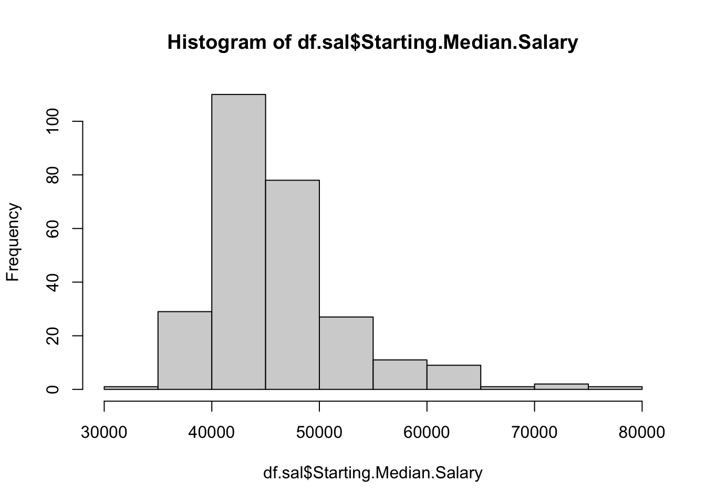

Using relevant information in R to give a thorough description of the variable Starting.Median.Salary. Mention properties of location, spread, and describe the shape (i.e., skewness) of the distribution.
Show solution
The typical starting median salary is about $44,700 (median), with an average of about $46,068. The highest reported starting median salary is $75,500, from the California Institute of Technology, while the lowest is $34,800, from Morehead State University. The middle 50% of schools have starting median salaries ranging from $42,000 to $48,300. The distribution is right-skewed.
summary(df.sal$Starting.Median.Salary)
Min. 1st Qu. Median Mean 3rd Qu. Max.
34800 42000 44700 46068 48300 75500
hist(df.sal$Starting.Median.Salary)

Calculate the z-scores of Starting.Median.Salary and Mid.Career.Median.Salary and store the z-scores as separate variables (zstarting and zmid, respectively) in the data frame.
Print the information of schools whose zstarting is greater than 2.
Show solution
df.sal[df.sal$zstarting >2, ]
School.Name School.Type
1 Massachusetts Institute of Technology (MIT) Engineering
2 California Institute of Technology (CIT) Engineering
3 Harvey Mudd College Engineering
4 Polytechnic University of New York, Brooklyn Engineering
5 Cooper Union Engineering
6 Worcester Polytechnic Institute (WPI) Engineering
7 Carnegie Mellon University (CMU) Engineering
8 Rensselaer Polytechnic Institute (RPI) Engineering
11 Stevens Institute of Technology Engineering
88 Princeton University Ivy League
89 Yale University Ivy League
90 Harvard University Ivy League
91 University of Pennsylvania Ivy League
92 Cornell University Ivy League
94 Columbia University Ivy League
95 University of California, Berkeley State
Starting.Median.Salary Mid.Career.Median.Salary
1 72200 126000
2 75500 123000
3 71800 122000
4 62400 114000
5 62200 114000
6 61000 114000
7 61800 111000
8 61100 110000
11 60600 105000
88 66500 131000
89 59100 126000
90 63400 124000
91 60900 120000
92 60300 110000
94 59400 107000
95 59900 112000
Mid.Career.10th.Percentile.Salary Mid.Career.25th.Percentile.Salary
1 76800 99200
2 NA 104000
3 NA 96000
4 66800 94300
5 NA 80200
6 80000 91200
7 63300 80100
8 71600 85500
11 68700 81900
88 68900 100000
89 58000 80600
90 54800 86200
91 55900 79200
92 56800 79800
94 50300 71900
95 59500 81000
Mid.Career.75th.Percentile.Salary Mid.Career.90th.Percentile.Salary
1 168000 220000
2 161000 NA
3 180000 NA
4 143000 190000
5 142000 NA
6 137000 180000
7 150000 209000
8 140000 182000
11 138000 185000
88 190000 261000
89 198000 326000
90 179000 288000
91 192000 282000
92 160000 210000
94 161000 241000
95 149000 201000
zstarting zmid
1 4.075029 2.934368
2 4.589640 2.725107
3 4.012652 2.655354
4 2.546792 2.097325
5 2.515603 2.097325
6 2.328472 2.097325
7 2.453226 1.888065
8 2.344066 1.818311
11 2.266095 1.469544
88 3.186156 3.283136
89 2.032181 2.934368
90 2.702734 2.794861
91 2.312878 2.515847
92 2.219312 1.818311
94 2.078964 1.609051
95 2.156935 1.957818
Print the information for Rutgers University. Give an interpretation for its zstarting and zmid values.
Show solution
Rutgers University’s starting median salary is 0.66 standard deviations above the mean, and its mid-career median salary is 0.55 standard deviations above the mean.
What is the mean of zstarting for only the liberal arts colleges? What about the mean of zmid for liberal arts colleges? What conclusion can you draw by comparing the two means?